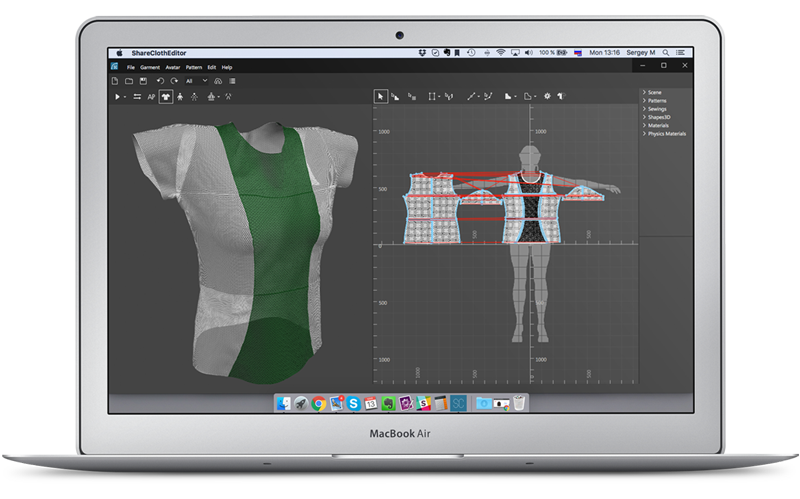

To create a 3D project, you will need a traditional flat dress-pattern, which you’ll easily turn into a 3D model

DXF support
Fast 3D sampling
3D model generation won’t take more than five minutes. Just a few steps – and you are ready to check the on the exact virtual copy of the item
Pattern customization
Using ShareCloth Editor you’ll be able to quickly change the fit and 3D representation of the item with the help of embedded tools
Digital fabric settings
Set-up fabric properties & behaviour for your garment no matter which kind of printing filament or textile would be applied
Sharing & Collaboration
You can always share the model with a client, and organize a remote virtual fitting using cloud services
Detailed virtual fitting
ShareCloth offers designers greater options for fitting the virtual garment on generated mannequins and 3D body scans
Mac & Windows support
Both main platforms supported. The online viewer is convenient for any smartphone, tablet or computer
Direct G-code generation
Our product enables direct generation of G-code for your 3D printer so item can be printed without using any additional programs